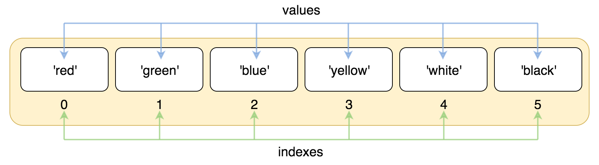
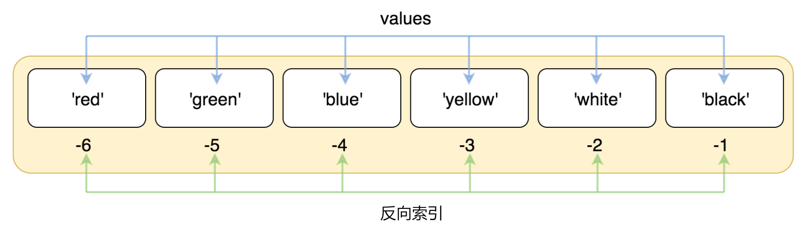
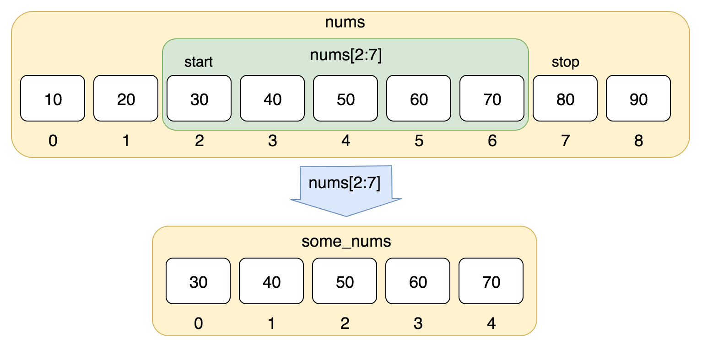

Python3 Lists
Sequences are the most basic data structures in Python.
Each value in a sequence has a corresponding position value, called an index. The first index is 0, the second is 1, and so on.
Python has 6 built-in types of sequences, but the most common are lists and tuples.
Operations that can be performed on lists include indexing, slicing, adding, multiplying, and checking membership.
In addition, Python has built-in methods for determining the length of a sequence and for determining the largest and smallest elements.
Lists are the most commonly used Python data type, and they can appear as comma-separated values within square brackets.
The data items in a list do not need to have the same type.
To create a list, simply enclose different comma-separated data items in square brackets. As shown below:
list2 = [1, 2, 3, 4, 5 ]
list3 = ["a", "b", "c", "d"]
list4 = ['red', 'green', 'blue', 'yellow', 'white', 'black']
Accessing Values in a List
Like string indexing, list indices start from0the second index is1and so on.
By using indices, lists can be sliced, combined, and so on.

Example
list = ['red', 'green', 'blue', 'yellow', 'white', 'black']
print( list[0] )
print( list[1] )
print( list[2] )
The above example outputs:
red green blue
Indexing can also start from the tail, with the last element's index being-1and the one before it being-2and so on.

Example
list = ['red', 'green', 'blue', 'yellow', 'white', 'black']
print( list[-1] )
print( list[-2] )
print( list[-3] )
The above example outputs:
black white yellow
Use subscript indices to access values in a list. Similarly, you can use square brackets[]to slice characters, as shown below:

Example
nums = [10, 20, 30, 40, 50, 60, 70, 80, 90]
print(nums[0:4])
The above example outputs:
[10, 20, 30, 40]
Slicing with negative index values:
Example
list = ['Google', 'Runoob', "Zhihu", "Taobao", "Wiki"]
# Read the second element
print ("list[1]: ", list[1])
# Slice from the second element (inclusive) to the second-to-last element (exclusive)
print ("list[1:-2]: ", list[1:-2])
The above example outputs:
list[1]: Runoob list[1:-2]: ['Runoob', 'Zhihu']
Updating Lists
You can modify or update data items in a list, and you can also use the append() method to add list items, as shown below:
Example (Python 3.0+)
list = ['Google', 'Runoob', 1997, 2000]
print ("The third element is : ", list[2])
list[2] = 2001
print ("The third element after update is : ", list[2])
list1 = ['Google', 'Runoob', 'Taobao']
list1.append('Baidu')
print ("The updated list : ", list1)
Note:We will discuss in the following chaptersappend()the usage of the method.
The above example outputs:
第三个元素为 : 1997 更新后的第三个元素为 : 2001 更新后的列表 : ['Google', 'Runoob', 'Taobao', 'Baidu']
Deleting List Elements
You can use the del statement to delete elements in a list, as in the following example:
Example (Python 3.0+)
list = ['Google', 'Runoob', 1997, 2000]
print ("Original list : ", list)
del list[2]
print ("After deleting the third element : ", list)
The above example outputs:
原始列表 : ['Google', 'Runoob', 1997, 2000] 删除第三个元素 : ['Google', 'Runoob', 2000]
Note:We will discuss the use of the remove() method in the following chapters
Python List Script Operators
The + and * operators for lists are similar to those for strings. The + sign is used to combine lists, and the * sign is used to repeat lists.
As shown below:
| Python Expression | Result | Description |
|---|---|---|
| len([1, 2, 3]) | 3 | Length |
| [1, 2, 3] + [4, 5, 6] | [1, 2, 3, 4, 5, 6] | Concatenation |
| ['Hi!'] * 4 | ['Hi!', 'Hi!', 'Hi!', 'Hi!'] | Repetition |
| 3 in [1, 2, 3] | True | Whether the element exists in the list |
| for x in [1, 2, 3]: print(x, end=" ") | 1 2 3 | Iteration |
Python List Slicing and Concatenation
Python list slicing is similar to string operations, as shown below:
Operation:
| Python Expression | Result | Description |
|---|---|---|
| L[2] | 'Taobao' | Read the third element |
| L[-2] | 'Runoob' | Read the second-to-last element from the right: count from the right |
| L[1:] | ['Runoob', 'Taobao'] | Output all elements starting from the second element |
>>> L[2]
'Taobao'
>>> L[-2]
'Runoob'
>>> L[1:]
['Runoob', 'Taobao']
>>>
Lists also support concatenation operations:
>>> squares += [36, 49, 64, 81, 100]
>>> squares
[1, 4, 9, 16, 25, 36, 49, 64, 81, 100]
>>>
Nested Lists
Using nested lists means creating other lists within a list, for example:
>>> n = [1, 2, 3]
>>> x = [a, n]
>>> x
[['a', 'b', 'c'], [1, 2, 3]]
>>> x[0]
['a', 'b', 'c']
>>> x[0][1]
'b'
List Comparison
List comparison requires importing theoperatormodule'seqmethod (see:Python operator module）：
Example
import operator
a = [1, 2]
b = [2, 3]
c = [2, 3]
print("operator.eq(a,b): ", operator.eq(a,b))
print("operator.eq(c,b): ", operator.eq(c,b))
The above code outputs:
operator.eq(a,b): False operator.eq(c,b): True
Python List Functions & Methods
Python includes the following functions:
| No. | Function |
|---|---|
| 1 | len(list) Number of elements in a list |
| 2 | max(list) Returns the maximum value of list elements |
| 3 | min(list) Returns the minimum value of list elements |
| 4 | list(seq) Converts a tuple to a list |
Python includes the following methods:
| No. | Method |
|---|---|
| 1 | list.append(obj) Adds a new object at the end of the list |
| 2 | list.count(obj) Counts the number of times an element appears in the list |
| 3 | list.extend(seq) Appends multiple values from another sequence to the end of the list at once (extends the original list with a new list) |
| 4 | list.index(obj) Finds the index position of the first matching item of a value in the list |
| 5 | list.insert(index, obj) Inserts an object into the list |
| 6 | list.pop([index=-1]) Removes an element from the list (the last element by default), and returns the value of that element |
| 7 | list.remove(obj) Removes the first matching item of a value in the list |
| 8 | list.reverse() Reverses the elements in the list |
| 9 | list.sort( key=None, reverse=False) Sorts the original list |
| 10 | list.clear() Clears the list |
| 11 | list.copy() Copies the list |
tianqixin
429***967@qq.com
Reference address
python to create a two-dimensional list, just write the required parameters into cols and rows
Example:
tianqixin
429***967@qq.com
Reference address
Handyman
854***070@qq.com
Share an example. I just learned it, don't criticize if it's wrong:
We can see that l is followed by two colons and a 2, the effect:
My understanding is:
Traverse [start, end) with an interval of span. When span > 0, traverse in order; when span < 0, traverse in reverse.
If start is not provided, it defaults to 0; if end is not provided, it defaults to the length.
Handyman
854***070@qq.com
c@sm
149***624@qq.com
Copying Lists
It can be seen that a, b, c have the same id value. When the value of any element in these lists is changed, all three will change synchronously.
But the element values in d will not change, and changing the element values of d will not change the element values in the other three variables.
From the id values of a, b, c, d, the addresses of a, b, c are all the same; only d is allocated a new address.
Therefore, in general, if you want to copy to obtain a new list and change the elements in the new list without affecting the original list, you can use the assignment method of d.
This is only for this relatively simple ordinary list.
c@sm
149***624@qq.com
Lmac
lma***03@163.com
@smThe issue of list copying mentioned by a classmate can actually be solved with the copy() function in the copy module. Example:
Lmac
lma***03@163.com
david
185***88@qq.com
The two classmates above are both right. There is also the copy() method that comes with list, which allocates new memory space to store the new list.
original_list=[0,1,2,3,4,5,6,7,8] copy_list=original_list.copy() copy_list=copy_list+['a','b','c'] print("original_list:",original_list) print("copy_list modify:",copy_list)Output
david
185***88@qq.com
182yzh_
182***6895@qq.com
An empty list can be simply represented by two square brackets ([]) – there is nothing inside it. But what if you want to create a list that occupies ten element spaces but does not contain any useful content? First, you can use a specific value to substitute, similar to the method below.
This creates a list containing ten 0s. However, sometimes you may need a value to represent emptiness – meaning nothing is placed in it. In this case, you need to use None. None is a built-in value in Python, and its exact meaning is "there is nothing here". Therefore, if you want to initialize a list of length 10, you can do it as in the following example:
This way, you can then initialize the individual elements of the list.
182yzh_
182***6895@qq.com
malan
may***im.ac.cn
Sometimes when getting elements from a list, you may encounter the following situation:
This happens because only an empty list was defined, without any assignment, so there is nothing in the list. The error later clearly indicates that the index is out of range; that is, the 0 written is actually the position of the first value, but at this time it is an empty list with no assignment, hence the error.
But if we use the following statement, no error will be reported:
This is not some trick; it has a different meaning. This statement actually outputs all the values in list a, and its effect is consistent with the final result expressed below.
This statement cannot avoid the index-out-of-range error mentioned above; these are fundamentally two statements with different meanings. a[0:] and a[:] are equivalent to print(a) when output in a script. This is not a way to solve the error, so you cannot use it as a trick.
malan
may***im.ac.cn
samson
492***982@qq.com
Reference address
I feel that the explanation of list comprehension is missing (this feature is very convenient)
1. List comprehension writing form:
2. Examples:
#!/usr/bin/python # -*- coding: utf-8 -*- li = [1,2,3,4,5,6,7,8,9] print ([x**2 for x in li]) print ([x**2 for x in li if x>5]) print (dict([(x,x*10) for x in li])) print ([ (x, y) for x in range(10) if x % 2 if x > 3 for y in range(10) if y > 7 if y != 8 ]) vec=[2,4,6] vec2=[4,3,-9] sq = [vec[i]+vec2[i] for i in range(len(vec))] print (sq) print ([x*y for x in [1,2,3] for y in [1,2,3]]) testList = [1,2,3,4] def mul2(x): return x*2 print ([mul2(i) for i in testList])Result:
[1, 4, 9, 16, 25, 36, 49, 64, 81] [36, 49, 64, 81] {1: 10, 2: 20, 3: 30, 4: 40, 5: 50, 6: 60, 7: 70, 8: 80, 9: 90} [(5, 9), (7, 9), (9, 9)] [6, 7, -3] [1, 2, 3, 2, 4, 6, 3, 6, 9] [2, 4, 6, 8]3. Summary:
I think it just uses the for statement to process the variable in the expression. If conditions need to be added, just add an if condition.
samson
492***982@qq.com
Reference address
GaiFan
343***128@qq.com
This tutorial does not mention list slicing, so here is a brief explanation.
Format: 【start:end:step】
For example:
If you are not an "old hand" who also pursues syntactic details, you probably cannot see the effect of this code at first glance. In fact, to better reflect pythonic code, it makes full use of the reversed() function in the Python library.
GaiFan
343***128@qq.com
nicergj
nic***j@163.com
1 Copy a list by list slicing:
1.1 List copy
my_foods = ['pizza', 'falafel', 'carrot cake'] friend_foods = my_foods[:] print("My favorite foods are:") print(my_foods) print("\nMy friend's favorite foods are:") print(friend_foods)Output:
1.2 Verify that two lists are indeed created
my_foods.append('cannoli') friend_foods.append('ice cream') print("My favorite foods are:") print(my_foods) print("\nMy friend's favorite foods are:") print(friend_foods)Output:
It can be seen that copying a list by slicing results in two lists.
2 Copy a list by simple assignment:
my_foods = ['pizza', 'falafel', 'carrot cake'] friend_foods = my_foods my_foods.append('cannoli') friend_foods.append('ice cream') print("My favorite foods are:") print(my_foods) print("\nMy friend's favorite foods are:") print(friend_foods)Output:
It can be seen that the two lists are the same, which is not the result we want.
nicergj
nic***j@163.com
Yota_Togashi
116***47@qq.com
This example shows that Python lists are linked storage structures, not sequential storage.
a=[1,2,3,4] for i in range(len(a)): print(id(a[i])) a[1]=100 print("----------") for i in range(len(a)): print(id(a[i]))Output result:
Yota_Togashi
116***47@qq.com
Sleepy Lazy Cat
wan***houyan@163.com
The objects of Python list functions & methods can be not only strings but also lists.
list1 = ["Googl",'Runoob',1997,2002] list2 = [1,2,3,4,5,6] list2.append(list1)print ("list2:",list2)The output is as follows:
Simple understanding: when Python operates on objects, it operates according to its own definition of the object. Here list1 is defined as a list, solist.append(obj)when operating on list1, it is appended as a list.Sleepy Lazy Cat
wan***houyan@163.com
Cold Pupil
126***3513@qq.com
Reference address
[:-1] and [::-1] in Python
1. Case explanation
2. Usage description
Cold Pupil
126***3513@qq.com
Reference address
I Am the Future
951***665@qq.com
List traversal:
# 正序遍历： list01 = ["Googl",'Runoob',1997,2002] for i in range(len(list01)): #用法1 print(list01[i]) for item in list01: #用法2 print(item) # 反向遍历 for i in range(len(list01) - 1, -1, -1): print(list01[i])I Am the Future
951***665@qq.com